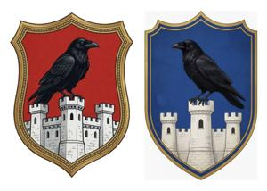
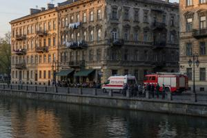
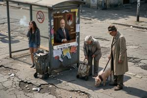
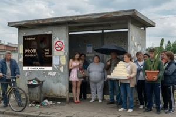
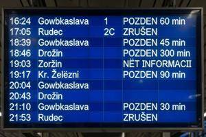

Vronovica
{kind=link}

Vronovica (Pannonian Glagolitic: ⰂⰓⰑⰐⰑⰂⰊⰜⰀ) is the capital of Former Upper Pannonia, situated on the left (northern) bank of the South Drava river (Juzsna Drava). Founded as an Ottoman fortress in the sixteenth century, it has served as the administrative center of an Ottoman sancak, an Austrian military generalate, the Upper Pannonian Banate, and the successive republican and royal governments of independent Upper Pannonia. Under the Lausanne Agreements of 1995, the city is divided between two de facto states, Zgurian Republic and Deglian Republic, by the South Drava and the Neutral Zone.
Name
The name Vronovica derives from Pannonian vron (raven) and the suffix -ovica, meaning roughly "Raven's Hold" or "Place of the Raven." The Slavic form was used informally through the Ottoman and Habsburg periods and became the sole official name upon the proclamation of the First Republic in 1918.
The city has been known under five names, all sharing the raven motif: Ottoman Kuzgun Qalesi (Turkish: "Raven's Fortress"), after the city's founder; Latin Corvi Castellum, German Rabenburg (both meaning "Raven's Fortress"), Hungarian Hollófészek ("Raven's Nest"), and Pannonian Vronovica, with the fortress within called Vronov Grod ("Raven's Castle").
History overview
Foundation
The city traces its origin to Haqim Abaz Bey Kuzgun, an Ottoman commander whose record is substantially overlaid with legend. Haqim participated in the advance of 1529 that pillaged and burned Bregovo, the region's principal Slavic settlement and episcopal seat. He identified a strategically favorable site on the northern bank of the South Drava and established a permanent fortified position there; construction of the initial fortress began around 1534.
From a Caucasian tribe only recently converted to Islam, Haqim was reputed to practice shamanistic rites and credited with the ability to shapeshift into a raven. The nickname Kuzgun — Turkish for raven — passed to the fortress and eventually to the city.
A legend persists: a large aged raven appears within the castle precincts at moments of catastrophe, speaking in Ottoman Turkish. The apparition is recorded in connection with the First World War, the Hungarian invasion of 1940, and the outbreak of civil war in 1992. Contemporary Ottoman records treat Haqim as an unremarkable frontier commander; his elaboration into a culture hero belongs to Pannonian folk tradition.
Ottoman era
For approximately a century and a half, Kuzgun Qalesi served as the administrative center of Kuzgun Sancak. The fortress was expanded through the sixteenth century, acquiring barracks, a mosque, a hammam, and a caravanserai serving the trade routes to Ottoman Hungary and the Adriatic. The most durable Ottoman construction was the stone bridge over the South Drava — the Turski most ("Turkish bridge") — which remained the sole river crossing at Vronovica for over two centuries and still stands.
Habsburg era
The Austrian campaign of 1691 recaptured Upper Pannonia; Kuzgun Qalesi fell the same year. The Habsburg administration demolished the mosque, hammam, and caravanserai within a decade and made the city — renamed Rabenburg — as the center of Upper Pannonian Military Frontier (or Generalate) and Upper Pannonian County, the two regional administrative units.
Between 1692 and 1701, Austrian engineers rebuilt the fortress to Vauban principles and excavated the Fortress Canal (Grodski ruv) diverting a minor South Drava tributary, converting the fortress into an artificial island. Two bridges spanned the canal: the north-western Beczki most ("Viennese bridge") and the north-eastern Budajski most ("Buda bridge"), both rebuilt in stone in the nineteenth century and still standing.
In the 1750s, Empress Maria Theresa sponsored a cathedral dedicated to St. Tibor on the island. Built in the late Baroque style by court architect Nikolaus Pacassi and consecrated in 1755, it celebrated the Austrian imperial authority over Upper Pannonia. The consecration coincided with the formal transfer of the Upper Pannonian episcopal seat from the ruined Bregovo to Rabenburg, cementing the city's ecclesiastical as well as administrative primacy.
The nineteenth century brought sustained urban expansion beyond the island fortress. The Buda avenue, renamed King Franz Joseph avenue after the 1867 Compromise, became the axis of new development. Between 1860 and 1914, the avenue and its parallel streets filled with the institutions of a prosperous provincial capital: an opera house, the History and Fine Arts Museum, the City Council building, the Stock Exchange, and successive apartment buildings and private mansions in eclectic historicism and Sezession. This district has preserved the character of a Habsburg Mitteleuropean boulevard largely intact through the twentieth century's upheavals.
The Bridged Ring (Mostovano Kolo), built 1870–1874, encircled the fortress island with a broad road and added two South Drava bridges. A horse-drawn tram network opened in 1882 and was electrified 1901–1906. Piped water reached the central quarters in the 1880s, followed by gas and electric street lighting. South of the river, manufacturing enterprises spawned a quarter of workshops, factories, and workers' housing that expanded without planning oversight until demolished and replaced under Communists in the 1950s.
Interbellum
The dissolution of Austria-Hungary in 1918 made the renamed Vronovica the capital of the First Republic. Economic hardship through the 1920s and 1930s largely froze the city's growth, with new construction limited to ideologically charged showcase buildings.
These concentrated along the Slavjanska jezda ("Slavic avenue"), formerly Queen Elisabeth avenue, extending the built fabric westward. Its most significant monument was the cathedral of SS. Cyril and Methodius, consecrated in 1932 and intended to displace St. Tibor's as the spiritual center of an independent Pannonian state. The design by architect Isztvan Koczar combined Byzantine and Balkano-Slavic ecclesiastical tradition with Italian Rationalism and Art Deco ornament. It became the setting for the enthronements of King Drogan I in 1934 and Queen Adele in 1936.
The Glovacz decade brought a reorganized secret police to the former Habsburg buildings on the island and a militarized ceremonial culture along the Slavjanska jezda. Weekly parades processed from the Legislative Assembly (Zakonodarno Zgromadjenje, 1935, stripped Rationalist) to the Velikomoravski Trug before the cathedral, featuring army units, the National Empowerment Guard (zmocznjaki, "the black suspenders"), and student cohorts. The Graliscze Krola Drogana stadium, seating thirty thousand, was built on the northern outskirts in 1937. The physical fabric of the older city remained otherwise unchanged until the Hungarian invasion of September 1940.
World War II
Following the Hungarian annexation, Hollófészek was reinstated as the sole official designation; the Slavjanska jezda was renamed Horthy avenue. The Pannonian language was removed from schools and correspondence; Droganist formations were dissolved. The Jewish community was subjected to the racial legislation operative in Hungary since 1938, though mass deportations were not yet implemented.
German occupation in March 1944 transformed persecution into extermination. The Jewish and Roma populations — concentrated in the Zadravska district — were deported in spring and summer 1944; the great majority were murdered.
The Red Army's autumn offensive drove Hungarian and German forces out in heavy fighting through November 1944; artillery and aerial bombardment damaged residential quarters and the cathedral of SS. Cyril and Methodius. Severyn Gowbka arrived in Vronovica in December 1944 at the head of a Soviet-backed provisional government; the People's Republic was proclaimed the following year.
Socialist era
The new government replaced occupation-era street names: Horthy avenue became Lenin avenue, Budapest avenue became Stalin avenue, and Velikomoravski Trug became Malinovsky Square. The island fortress was assigned to the Ministry of People's Security (NOON), giving rise to the private euphemism Grod ("the Fortress") for the organization. War-damaged buildings were largely restored by the early 1950s.
The more consequential change was the transformation of the neglected Zadravska district. Construction of the hydroelectric plant downstream raised the river's level and required a protective embankment along the waterfront, anchoring the first phase of replanning. From around 1955, deteriorated workers' housing was demolished and replaced with four-story prefabricated concrete panel blocks (Gowbczi skrynki, "Gowbka boxes"), small but with indoor plumbing and electricity. Schools, polyclinics, and workers' cultural clubs followed.
The political realignments of the 1950s–60s produced another wave of renaming. Lenin avenue became Generalissimo Gowbka avenue; Stalin avenue became Miljana Gowbka avenue; Malinovsky Square became Tito Square, then — after the 1966 break with Yugoslavia — Mao Zedong Square.
The 1960s brought a second building program south of the river. Eight-story "Gowbka wardrobes" (Gowbczi szatniki) — with lifts, generous floor plans, and central heating — replaced Gowbka boxes as the standard residential unit and formed the fabric of Sockostur ("Socialist City") from 1965. The district was organized along People's Liberation Army avenue, with the Alley of Heroes as its monumental pedestrian spine, a twenty-four-metre bronze equestrian statue of Gowbka at its head, and cultural, administrative, and sports facilities among the wardrobe blocks. Construction continued through the 1980s. The exception was the Narodny Polac (People's Palace), designed to house the Party Central Committee, the Council of Ministers, and the Legislative Assembly: begun in 1971, it reached shell form by 1988 before subsidies ceased in 1990, leaving a concrete shell as the most visible unfinished commission of the Socialist era.
Physical transformation was accompanied by standardization of commercial surfaces: nationalized shops and cafés were redesignated by category and serial number ("Clothing Shop No. 40," "Canteen No. 72"). Portraits of Generalissimo Gowbka — in uniform, in oratorical pose, and as "father of the nation" surrounded by children — appeared in windows, foyers, schools, and transport terminals; public buildings were required to carry political slogans. The civic calendar centered on two mass mobilizations: the 1 May parade from Generalissimo Gowbka avenue to the Victory Square, and the 17 November Liberation Day rally at the stadium. From the late 1960s, the Drava microcar appeared in growing numbers on streets designed for trams and pedestrians.
Post-socialist era
The fall of the Communist government in 1990 brought the third comprehensive wave of renaming. Generalissimo Gowbka avenue reverted to Slavjanska jezda; Miljana Gowbka avenue was rechristened Enjo Zslutovodyj avenue; Mao Zedong Square was restored to Velikomoravski Trug; the Sockostur axis became Liberation avenue.
The transition brought no improvement in material life. The dismantling of the planned economy in 1990–1991 was rapid, poorly regulated, and widely regarded as corrupt; factories that could not attract buyers ceased to function. Unemployment reached approximately fifty percent by mid-1991, higher in the industrial quarters of Zadravska. The central streets were colonized by an open-air market, pavements and squares occupied by vendors selling surplus military stocks, smuggled goods, and everything between. Organized criminal groups moved quickly into the vacuum.
Violence was not uniformly distributed. The Habsburg-era avenues of the north, whose residents worked mainly in administrative and professional roles, experienced disorder as noise and visible degradation. Sockostur and Zadravska were hardest hit. The socialist housing programme had assigned workers from the same village to the same factory and block, reinforcing communal solidarity during full employment; when employment collapsed, the same networks reconstituted as neighbourhood militias, and the ethnic homogeneity of the blocks gave those militias a pronounced ethnic character.
Political mobilization through 1991 followed these ethnic fault lines. Deglian organizations demanded first territorial autonomy, then separate constitutional status; Zgurian formations treated the demands as a prelude to partition. The block militias found political patrons and became instruments of territorial claim. By autumn 1991 the central government was visibly losing its hold on the capital.
Full-scale civil war erupted in the spring of 1992. As central authority collapsed, the national army split along ethnic lines: some units defected intact to Zgurian or Deglian command, while others disbanded, their weapons and soldiers absorbed into the neighbourhood militias. The resulting force — regular units fighting alongside these informal militias — waged war street by street, marked throughout by deliberate atrocities. As the fighting resolved into two zones of control — Zgurian forces holding the north, Deglian forces the south — residents caught on the wrong side of that line fled or were driven out: Deglians moved south, Zgurians moved north. A de facto partition achieved by terror was complete within weeks. Sockostur became one of the heaviest zones of combat.
UN peacekeeping forces arrived in 1995; the Lausanne Agreements imposed a ceasefire and fixed the city's internal boundaries. The Neutral Zone functions as a reasonably safe urban environment. Outside it, wartime damage remains incompletely repaired, public institutions are underfunded or absent, and the population navigates permanent disorder as a fact of daily life.
Topography
{kind=link}

The city is divided by the South Drava into North (Old) Vronovica on the left bank and South (Transdravian) Vronovica on the right.
The layout of North Vronovica is governed by the island fortress. Three gated bridges project the principal avenues outward in a Y-configuration that continues to organize the modern city.
From the Viennese bridge (Beczki most), Slavic avenue (Slavjanska jezda) runs north-west as the main axis of the Zgurian zone. From the Buda bridge (Budajski most), Jezda Enja Zslutovodyj extends north-east through the Neutral Zone. From the Turkish bridge (Turski most), Independence avenue (Jezda Nepodstoja) on the southern bank leads to South Vronovica.
Since the late Habsburg period, North Vronovica has been divided into four enumerated districts. The First District comprises the fortress and the blocks adjacent to the Bridged Ring. The Second covers the north-east sector along Enjo Zslutovodyj avenue, including the old city cemetery to its south. The Third occupies the north-west sector around Slavjanska jezda, and the Fourth fills the northern sector between the Second and Third.
South Vronovica is connected to the north by the Turkish bridge and two later bridges, the Uper and the Lower. It initially comprised the Fifth District along the river bank; the Gowbka regime added the Sixth and Seventh Districts to the south, comprising Sockostur.
Demography
The most recent reliable figure is 654,530, from the 1985 census. No city-wide enumeration has been conducted since: the Lausanne partition left two incompatible administrations with no mechanism for joint survey. Both have issued figures widely regarded as inflated for electoral and humanitarian-aid purposes.
UN estimates place the permanent population of the Neutral Zone at ca. 20,000, the Zgurian zone at ca. 250,000, and the Deglian zone at ca. 400,000 — a total of roughly 670,000. Marginal growth from the 1985 figure masks severe stagnation; the gap reflects wartime casualties, displacement, and the sustained emigration of working-age residents.
The approximate ethnic breakdown is: ca. 260,000 Zgurians (concentrated in the Zgurian zone and Neutral Zone); ca. 360,000 Deglians (concentrated in the Deglian zone and Neutral Zone); ca. 40,000 Roma (predominantly in the Deglian zone); and ca. 10,000 other ethnicities distributed across all three zones. The last category includes approximately 1,000 individuals who still identify as Pannonian.
Mass emigration has left the population markedly older than the regional average. The most pronounced deficit is the cohort born ca. 1991–1996, underrepresented across all zones due to wartime infant mortality, emigration, and the sharp drop in birth rates during the collapse years.
Administration
The Neutral Zone (colloquially Nejtralka) encompasses the island fortress, the Bridged Ring with its adjacent blocks, and the north-eastern sector around Enjo Zslutovodyj avenue including the old city cemetery. It is administered by the City Management Office under UN authority and secured by the FUPFOR Police Division. The perimeter is wire-fenced with guarded checkpoints; pedestrians are admitted without document checks, vehicles are searched. All five bridges fall within the zone, so all road traffic between the banks passes through FUPFOR checkpoints.
The Zgurian zone comprises the north-western sector around Slavjanska jezda, the northern sector and the outer parts of the left bank. It is administered by an elected municipal council; since 2000, Adam Vloszek has served as mayor, winning five successive elections more or less competitively.
The Deglian zone encompasses Zadravska and Sockostur — almost the entire right bank. Martial law has been in effect since 1999. The unfinished People's Palace, occupied by Roma squatters in the early 1990s, has since remained beyond effective administrative reach.
No overarching municipal authority exists. A Municipal Affairs Trilateral Conciliatory Committee operates in the Neutral Zone; its decisions are not binding on either zone's administration, but it has secured workable arrangements on power supply, water distribution, and waste collection for all three zones.
Transportation
The transport network reflects the successive planning regimes that built it: Habsburg infrastructure largely operational in the Neutral Zone, socialist-era extensions in varying repair in the Zgurian and Deglian zones, and routes permanently severed by the 1992 partition.
{kind=link}

Trams. Lines A and B have operated clockwise and counterclockwise along the Bridged Ring since the Habsburg period, and remain the network's most reliable services. Additional lines serve the principal avenues of the left bank. In the Deglian zone, the tram network has not functioned since 1992; track in Zadravska and Sockostur was damaged during the civil war and has not been repaired, rolling stock largely destroyed or stripped. Overhead wires remain in place on several streets, where they serve as anchor points for market awnings and washing lines.
Metro. A rapid-transit subway was proposed as early as the 1970s. The first station, Theatre Square, was ceremonially inaugurated in 1985; by 1990 a tunnel had been dug as far as Northern Station, at which point the economic crisis halted construction. Two stations were never fitted out and remain sealed off today, along with the tunnel linking the Zgurian and Neutral zones. Illegal entry through undocumented underground passages is possible, though not without risks of various kinds.
{kind=link}

Buses and minibuses. Scheduled bus services operate in all three zones. The Neutral Zone network runs to a regular timetable. In the Zgurian and Deglian zones, municipal lines are supplemented — on many routes displaced — by private minibuses (miniki): sixteen-to-twenty-seat vehicles, typically aging and overloaded, under minimal regulatory oversight. No scheduled service runs directly between the two zones; passengers wishing to cross must transit through the Neutral Zone.
{kind=link}

Rail. Northern Station (Sjeverny Kolostan) in the Zgurian zone serves the north and west; South Station (Juzsny Kolostan) in the Deglian zone serves the south and east. The two were formerly linked by a connective line with a railway bridge upstream; the bridge was blown up in 1993 and no service has linked them since. International rail has not operated since 1992.
Air. King Svetoplok International Airport, north of the city, is administered by FUPFOR as part of the Neutral Zone. It handles charter flights to Western Europe, UN logistics and humanitarian operations, and occasional services to regional territories. The terminal — a Brutalist structure of the early 1970s, designed for a metropolitan area of one million — processes fewer than a dozen commercial flights per day.
Categories: Settlements, Vronovica